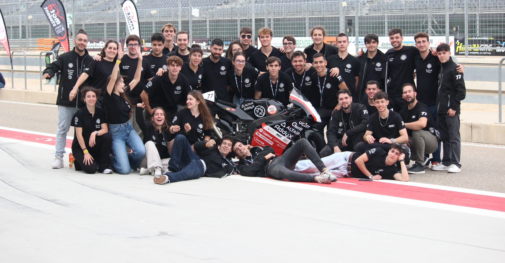
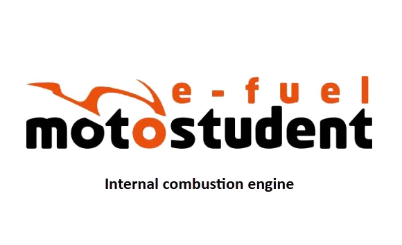
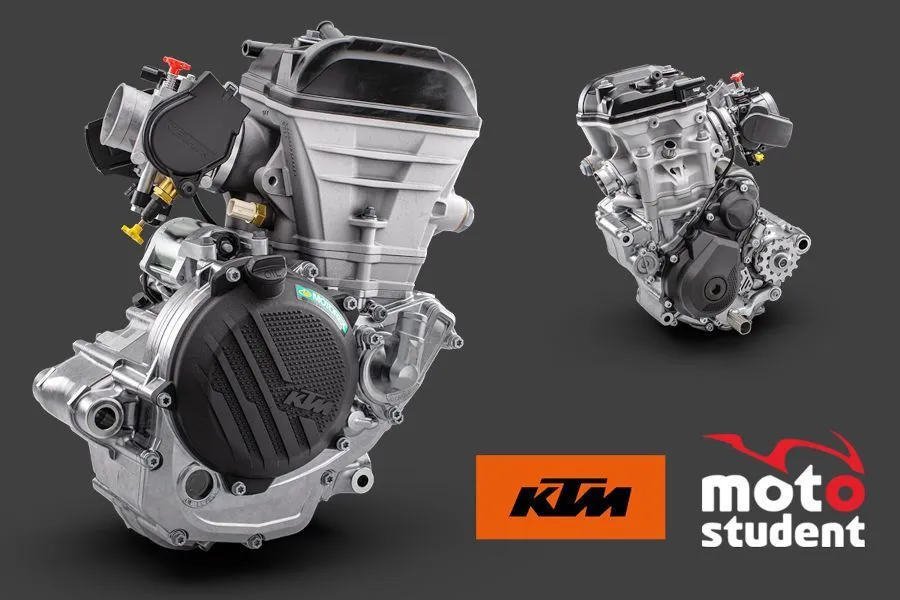
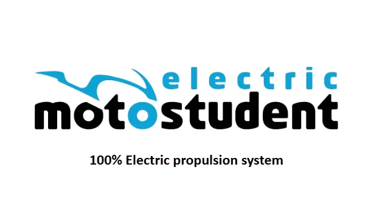
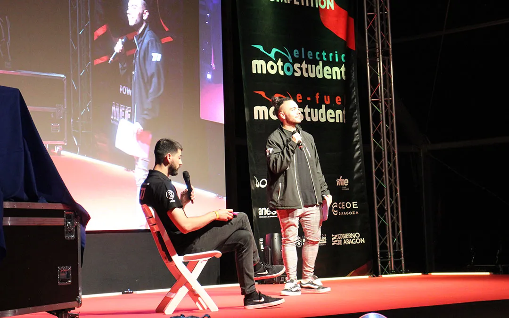
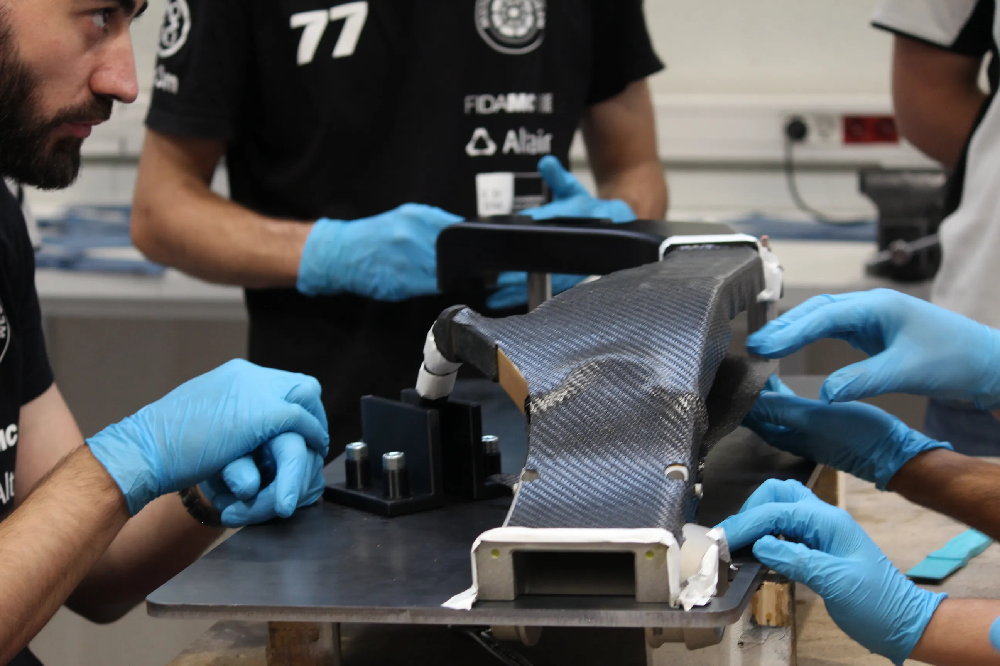
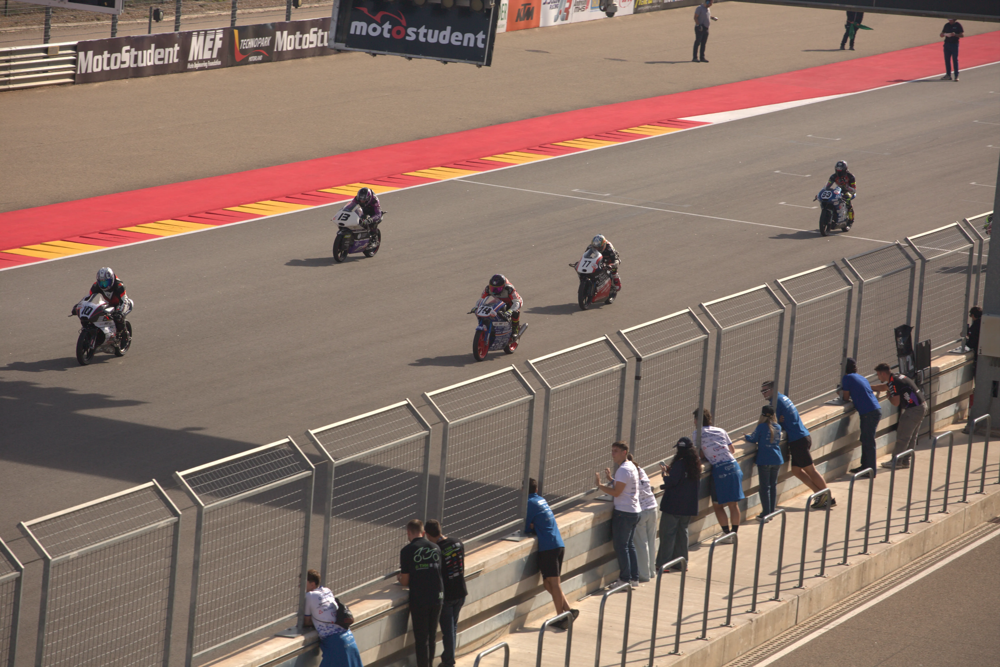

LA COMPETICIÓN
MOTOSTUDENT
El mayor desafío internacional de ingeniería universitaria sobre dos ruedas.

Las Dos Categorías
La competición evoluciona, ofreciendo dos caminos hacia la ingeniería de élite.



Fase MS1: El Proyecto Industrial
MotoStudent obliga a los equipos a comportarse como verdaderas empresas de automoción. Según el nuevo reglamento de la edición 2026/2027, en la Fase MS1 (600 puntos), la competición evalúa el proyecto desde un prisma puramente técnico y de viabilidad empresarial antes de que las motos pisen el asfalto.


Fase MS2: Pruebas Dinámicas y Carrera
Tras meses de arduo trabajo en el taller, los equipos viajan con su prototipo fabricado a la gran cita final en el Circuito FIM de MotorLand Aragón. Aquí es donde la moto se enfrenta al mundo real en la Fase MS2 (540 puntos máximos).


¿QUIERES VIVIR EL DESAFÍO EN PISTA?
Si estudias en la UC3M y quieres diseñar, construir y competir en MotoStudent, la captación para la nueva temporada está abierta.